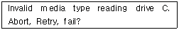
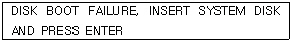
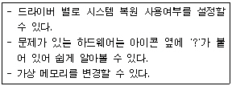
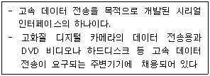

PC정비사-2급 (2009-04-26 기출문제)
1과목: PC유지보수
1. 컴퓨터 조립시 전체 부품을 한꺼번에 조립하지 않고, 일단 모니터에 BIOS 정보가 출력되는지만 확인하고자 할 때 반드시 필요한 부품이 아닌 것은?
- CPU
- 메인보드
- 메모리
- 하드디스크
(정답률: 82%)

2. 바이오스(BIOS) 업그레이드에 대한 설명 중 잘못된 것은?
- Windows에서 업그레이드가 가능한 메인보드도 있다.
- 업그레이드 도중에 컴퓨터의 전원을 꺼서는 안 된다.
- 메인보드에 바이오스 쓰기 프로텍트(protect)가 걸려있는 경우 쓰기금지를 해제 후 업그레이드 한다.
- 바이오스를 업그레이드 할 때는 반드시 메인보드의 배터리를 제거한 후 진행한다.
(정답률: 91%)
3. 하드디스크를 바꾸거나 추가할 때 다시 설정 값을 확인해야 하는 것은?
- 모니터
- 주기억장치 타입
- CMOS
- IRQ 설정
(정답률: 81%)
4. PC 조립 시 연결하지 않으면 시스템에 치명적인 문제를 발생시킬 수도 있는 것은?
- HDD LED 커넥터
- Power LED 커넥터
- CPU 쿨러 커넥터
- CD-ROM 사운드 케이블
(정답률: 92%)
5. Award 바이오스의 BIOS SETUP 중 "CPU의 클록이나 메모리 타이밍 값을 조정"할 때 사용하는 메뉴는?
- Frequency/Voltage Control
- PC Health Status
- Integrated Peripherals
- PnP/PCI Configurations
(정답률: 76%)
6. 시작메뉴를 변경하고자 할 경우 레지스트리를 편집하지 않고 정책 개체 편집를 이용하여 편집할 수 있는데 그룹 정책 개체 편집기를 실행하는 명령어는?
- gpedit.msc
- eventvwr.msc
- lusrmgr.msc
- regedit.exe
(정답률: 53%)
7. Windows XP에서 응용 프로그램을 설치하는 도중, 디스크 공간이 부족하다는 메시지가 출력되었다. 이러한 문제를 해결하기위한 방법으로 잘못된 것은?
- 사용하지 않는 Windows 구성 요소를 삭제한다.
- 휴지통을 비운 후 휴지통의 최대 크기를 줄인다.
- 바탕화면에 있는 파일들을 내 문서 폴더로 이동하여 디스크 공간을 확보한다.
- 시스템의 디스크 정리를 실행하여 디스크 공간을 확보한다.
(정답률: 83%)
8. PC 사용 중 CPU나 메인 메모리에 문제가 발생할 때 일어나는 현상으로 잘못된 것은?
- 시스템 속도 저하
- 시스템 정지
- 모니터 전원 꺼짐
- 시스템 오동작
(정답률: 83%)
9. 아래와 같은 메시지가 나타나는 일반적인 이유는?

- FDISK로 파티션은 설정하였으나, 포맷을 하지 않은 경우
- 바이러스에 의해 시스템 경로가 깨진 경우
- 하드디스크의 IDE 연결이 잘못된 경우
- NTLDR가 파손된 경우
(정답률: 62%)
10. AMD CPU의 시스템 버스로 사용된 것으로, 그래픽카드 인터페이스나 메모리 등 고속의 버스가 필요한 부분을 노스브리지(north bridge)가 아닌 CPU에 바로 연결해 사용하여 CPU와 부품들 간의 병목 현상을 해결하기 위한 기술은?
- PCI 익스프레스(PCI Express)
- 하이퍼 트랜스포트(Hyper Transport)
- 허브 브리지(Hub bridge)
- 크로스파이어(Cross Fire)
(정답률: 70%)
11. PC의 버스 인터페이스 방식이 아닌 것은?
- ISA
- PCI
- AGP
- FPGA
(정답률: 67%)
12. 아래와 같은 에러 메시지가 나타날 때의 원인에 따른 해결방법 중 잘못된 것은?

- 부팅할 수 없는 디스켓이 플로피디스크 드라이브에 들어있는 경우, 디스켓을 빼고 부팅을 시도한다.
- 시스템 파일이 손상된 경우, 시스템 파일을 복구한다.
- 부팅 순서가 잘못 설정된 경우, 파티션을 재설정한다.
- 부팅 하드디스크와 메인보드간의 연결 케이블이 헐거워지거나 빠진 경우에 발생 할 수 있으므로 케이블을 제 설정한다.
(정답률: 55%)
13. 컴퓨터 전원을 켜면 컴퓨터의 이상 유무를 점검하기 위한 POST(Power On Self Test)가 진행되면서 여러 가지 정보가 모니터 화면에 나타난다. 다음 중 POST 과정에서 나타나는 정보가 아닌 것은?
- CPU 동작 클럭
- 메모리의 용량
- BIOS 정보
- 운영 체제 버전
(정답률: 74%)
14. Windows XP에서 시스템의 고장 진단에 대한 설명으로 올바른 것은?
- 휴지통에서 삭제한 파일을 복구할 때 디스크 조각모음 기능을 실행한다.
- [제어판]-[프로그램 추가/삭제] 기능은 통신 프로토콜에 대한 고장 진단을 할 때 이용된다.
- 모든 시스템 고장 진단은 [제어판]-[시스템]-[장치관리자]의 SCSI를 확인하면 알 수 있다.
- 충돌이 발생한 장치는 [제어판]-[시스템]-[장치관리자]를 열면 노란 느낌표가 붙어서 쉽게 고장 진단을 할 수 있다.
(정답률: 86%)
15. CMOS에서 HDD를 설정하기 위해서는 HDD의 용량에 따라 설정하는 Mode가 다르다. 다음 중 각 Mode에 대해 잘못 설명한 것은?
- AUTO : BIOS가 최적의 Mode를 검색
- NORMAL : 512MB 이하의 HDD에 사용
- LARGE : 1240 실린더 이하를 갖고 있다.
- LBA : 512MB 이상 고용량 HDD에 사용
(정답률: 63%)
2과목: PC운영체제
16. 입력되는 자료들을 일정 기간 동안 또는 일정량의 자료를 모아 한 번에 처리하는 운영체제 방식은?
- 온라인처리방식(On-Line Processing System)
- 다중프로그래밍체제(Multiprogramming System)
- 일괄처리체제(Batch Processing System)
- 시분할체제(Time Sharing System)
(정답률: 88%)
17. Windows XP에서 무료로 제공하는 메일 클라이언트 프로그램으로, 유즈넷 클라이언트로 활용할 수 있는 프로그램은?
- Outlook Express
- Netscape
- Eudora
- Internet Explorer
(정답률: 83%)
18. Windows XP에서 컴퓨터의 시스템, 프로그램, 보안 이벤트 로그를 표시하고 관리하는데 사용되는 관리 도구는?
- 구성 요소 서비스
- 성능
- 이벤트 뷰어
- 장치 관리자
(정답률: 73%)
19. PC의 운영체제로 사용되지 않는 것은?
- DOS
- JAVA
- Linux
- Windows XP
(정답률: 89%)
20. Windows XP의 탐색기에서 단축키에 관한 설명 중 잘못된 것은?
- F2 : 폴더 또는 파일의 이름을 바꿀 수 있다.
- Shift + Delete : 휴지통을 거치지 않고 바로 삭제한다.
- Alt + F4 : 활성화된 창을 닫는다.
- F3 : 작업 표시줄에 여러 개의 창이 있을 때 다음 창으로 전환한다.
(정답률: 82%)
21. Windows XP 콘솔 명령어에 대한 설명으로 잘못된 것은?
- COPY - 하나 이상의 파일을 다른 위치로 복사 하는 명령어이다..
- DEL - 디렉터리를 삭제하는 명령어이다.
- ATTRIB - 파일 속성(특성)을 보여 주거나 변경하는 데 사용한다.
- FIXMBR - 시스템 파티션의 MBR이 망가져서 부팅을 할수 없을 때 복구하는 명령어이다.
(정답률: 65%)
22. Windows XP에서 여러 사용자들에게 디스크 할당량을 주려고 한다. 현재의 파일 시스템이 FAT32일 때 해야 할 작업으로 올바른 것은?(단, 현재 있는 파일들을 삭제하면 안 된다.)
- FAT32는 디스크 할당량을 줄 수 없으므로, CONVERT 명령을 이용해서 NTFS로 파일시스템을 변경한다.
- FAT32는 디스크 할당량을 줄 수 없으므로, 다시 포맷을 한 후 NTFS파일 시스템으로 변경한다.
- [컴퓨터 관리] - [디스크 관리]에서 사용할 하드디스크를 동적 디스크로 변환한다.
- 디스크 할당을 위해서는 각 사용자 별로 하드디스크의 파티션을 분할해야 하므로 파티션을 다시 분할한다.
(정답률: 60%)
23. 다음과 같은 기능을 수행하는 제어판의 도구는?

- 멀티미디어
- 새 하드웨어 추가
- 시스템
- 내게 필요한 옵션
(정답률: 73%)
24. Windows XP의 폴더 공유 관리에 관한 설명 중 잘못된 것은?
- 네트워크를 통해 파일을 액세스할 수 있도록 만드는 방법은 해당 폴더를 공유하는 것이다.
- 공유된 폴더의 공유 이름으로 네트워크상의 다른 사용자가 공유 리소스를 이용할 수 있게 된다.
- 일부 폴더에 대한 액세스를 막기 위해 폴더 사용 권한을 사용할 수 있다.
- 폴더를 공유할 때 공유 이름은 반드시 해당 폴더 이름을 사용해야 한다.
(정답률: 73%)
25. "장치 관리자"를 통해서 할 수 있는 작업이 아닌 것은?
- 장치의 이상 유무 판단
- 장치 드라이버 업데이트
- 장치의 리소스 확인
- 장치 드라이버의 드라이버 서명 확인 여부
(정답률: 73%)
26. Windows XP가 작동되는 구성 값과 설정, 프로그램과 관련된 모든 정보가 저장 되어 있어 Windows XP 부팅 과정부터 로그인, 응용프로그램 구동에 이르기까지 Windows XP 운영체계에서 핵심적인 역할을 담당하고 있는 것은?
- 캐시 메모리(cache memory)
- 플래시 롬(flash ROM)
- 레지스트리(registry)
- Windows 커널
(정답률: 80%)
27. 제어판의 ‘네트워크 연결’에서 볼 수 있는 프로토콜이 아닌 것은?
- IPX/SPX 호환 프로토콜
- NetBEUI
- VDSL-PPP
- TCP/IP
(정답률: 74%)
28. 인터넷 익스플로러의 인터넷 옵션에서 “시작 페이지로 사용할 페이지”를 설정할 때 사용되는 메뉴 탭의 이름은?
- 일반
- 보안
- 고급
- 내용
(정답률: 84%)
29. Windows XP에서 제공하는 프로그램의 실행 파일명과 연결이 잘못된 것은?
- 디스크 조각 모음 - dfrg.msc
- 장치관리자 - devmgmt.msc
- 시스템 모니터 - msconfig.exe
- 계산기 - calc.exe
(정답률: 74%)
30. Windows XP의 제어판에 있는 기능 중 문자 반복 시간과 커서 깜박임 속도 등을 지정할 수 있는 것은?
- 마우스 등록 정보
- 화면 배색
- 키보드 등록 정보
- 디스플레이 등록 정보
(정답률: 70%)
3과목: PC주변기기
31. 하드디스크와 관련된 설명 중 잘못된 것은?
- 컴퓨터의 보조 기억장치이다.
- 프로그램 등 많은 양의 데이터를 취급할 때 일반적으로 사용하는 저장 장치이다.
- 사용 부주의로 하드디스크를 포맷하면 정보가 지워진다.
- 컴퓨터의 전원이 OFF 되면 정보가 지워진다.
(정답률: 87%)
32. 전원관리용 규격으로 운영체제가 직접 제어하도록 하는 기능은?
- ATAPI
- UPS
- ATX
- ACPI
(정답률: 59%)
33. 디스플레이 어댑터(adapter)의 구성 요소 중 디지털신호를 모니터에서 필요한 아날로그신호로 변환시켜 주는 장치는?
- RAMDAC
- 피처 커넥터(feature connector)
- VGA 바이오스 롬
- 비디오 램(video RAM)
(정답률: 70%)
34. DRAM과 CPU 사이에서 데이터 병목 현상을 제거하기 위해 CPU에 장착한 메모리는?
- L2 캐시
- C2 캐시
- DMA
- CF-RAM
(정답률: 81%)
35. AMD CPU는 CPU 이름을 “애슬론 64-X2 브리즈번 5200+”과 같이 표시한다. 이 이름 중 ‘5200+’의 의미는?
- FSB
- 모델 넘버
- 버전
- 작동 클럭
(정답률: 67%)
36. USB에 대한 설명 중 잘못된 것은?
- 범용 시리얼 버스로 주변장치를 연결하기 위한 개인용 인터페이스이다.
- Hot Plug 지원으로 컴퓨터의 전원이 켜져 있는 상태에서도 장치 인식이 가능하다.
- 별도의 전원이 필요없이 자체 +12V 전원이 공급된다.
- USB 1.0은 12Mbps, USB 2.0은 480Mbps까지를 지원한다.
(정답률: 67%)
37. 다음 설명에 해당하는 디지털 카메라의 인터페이스는?

- IEEE 802
- IEEE 1394
- RS-232C
- Serial Port
(정답률: 74%)
38. 사운드카드가 음을 만들기 위해 사용하는 방법이 아닌 것은?
- PCM 방식
- FM 방식
- AM 방식
- Wavetable 방식
(정답률: 52%)
39. 모든 컴퓨터는 네트워크 상에서 자신을 구분하기 위한 유일한 주소를 가지고 있다. 네트워크 인터페이스 카드(NIC) 제조 시에 부여된 48bit 물리적 주소는?
- TCP 주소
- IP 주소
- MAC 주소
- LAN 주소
(정답률: 79%)
40. 그래픽 카드 성능에 가장 직접적인 영향을 미치는 것은?
- 픽셀 파이프라인
- GPU 코어 클럭
- GPU 메모리버스
- GPU 메모리 용량
(정답률: 61%)
41. 일반적으로 노스브리지(north bridge)에서 담당하는 장치가 아닌 것은?
- CPU
- AGP
- 메모리
- IDE 버스
(정답률: 57%)
42. 컴퓨터의 기억장치는 크게 주기억장치와 보조기억장치로 구분된다. 다음 중 보조기억장치가 아닌 것은?
- Floppy Disk
- RAM
- DVD-ROM
- Hard Disk
(정답률: 69%)
43. 인터럽트(interrupt)와 관련된 설명으로 잘못된 것은?
- 인터럽트는 처리프로그램이 실행 중에 예기치 못한 일이 발생하면 이러한 상태를 하드웨어적으로 포착하여 감시 프로그램에게 제어권을 인도하는 것을 말한다.
- 인터럽트가 발생하는 원인은 기계검사 인터럽트, 외부 인터럽트, 입출력 인터럽트, 프로그램 검사 인터럽트 등이 있다.
- 인터럽트는 예약에 의해서만 실행된다.
- 정전에 의한 인터럽트도 있다.
(정답률: 76%)
44. IDE Controller가 할당 받는 IRQ 번호는?
- 11, 12
- 12, 13
- 13, 14
- 14, 15
(정답률: 44%)
45. 프린터 연결시 사용할 수 있는 포트로 올바른 것은?
- RS-232C만 가능
- IEEE-1284만 가능
- USB만 가능
- RS-232C, IEEE-1284, USB 모두 가능
(정답률: 81%)
4과목: PC네트워크
46. FTP Client와 Server 사이에 전달되는 모든 명령을 디버깅(debugging)하고 화면에 나타나도록 하기 위한 FTP 옵션은?
- -v
- -d
- -i
- -n
(정답률: 73%)
47. Windows XP 환경의 PC에서 `ipconfig /all' 명령을 사용했을 때 나타나는 각 항목에 대한 설명으로 잘못된 것은?
- DHCP Enabled : 현재 할당된 IP가 외부 통신이 가능한지 나타낸다.
- IP Address : 현재 할당된 IP 주소를 나타낸다.
- Default Gateway : 기본적으로 사용되는 Gateway 주소를 나타낸다.
- Physical Address : 일반적으로 네트워크 어댑터의 MAC주소를 나타낸다.
(정답률: 58%)
48. NETBEUI가 지원하는 OSI 7계층은?
- OSI 1계층
- OSI 2계층
- OSI 3계층
- OSI 6계층
(정답률: 65%)
49. 보안의 요구조건이 아닌 것은?
- 무결성
- 비밀성
- 가용성
- 범용성
(정답률: 70%)
50. RSS(RDF Site Summary)에 대한 설명으로 올바른 것은?
- 온라인 정보제공자들이 웹 사용자들에게 뉴스 등의 웹 콘텐츠를 배급 또는 배포할 수 있도록 서술하는 방법 중 하나이다.
- 사용자의 컴퓨터를 원격으로 조정할 수 있는 프로토콜이다.
- 웹(WWW) 상에서 사용되는 사용자의 개인 정보와 RSS에서 제공하는 정보로 회원가입이나 물건 등을 구매할 수 있다.
- 개인 보안 정보로서, 개인용 컴퓨터에 접속하기 위한 정보를 제공한다. 일반적으로 스마트카드 등에 정보를 저장한 후 로그인시 사용한다.
(정답률: 48%)